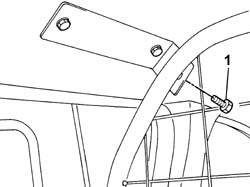
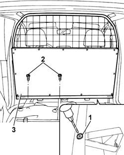

7027H24 passenger/load compartment protection - r r
- Path
- Procedures > 70 FITTINGS > 7027 LOAD CARRYING COMPARTMENTS > 7027H load compartment partitions > 7027H24 passenger/load compartment protection - r r
- Kind
- repair procedure (removal / refitting; the operation number is the code)
- Applies to
- all engines; all production periods
- Interactive page
- https://sloeber94.github.io/elrnDB-fPnd/en/#/2753147
Applies to: all engines; all production periods; only with equipment: VAN Configuration
 Removing
Removing
 Refitting
Refitting7040B10 load platform (luggage platform) trim - r+r
7040B16 rest platform in load compartment
1. Undo the bolts fixing the passenger compartment/load carrying compartment protection to the upper brackets.

Applies to: all engines; all production periods; only with equipment: VAN Configuration
1. Remove the bolts using a drill fitted with a suitable bit.
2. Undo the bolts fixing the passenger compartment/load carrying compartment protection to the lower brackets.
3. Remove the passenger compartment/load carrying compartment protection.

Applies to: all engines; all production periods; only with equipment: VAN Configuration
Refitting
RemovingFit the passenger compartment/load carrying compartment protection.
Tighten the bolts fixing the passenger compartment/load carrying comparetment protection to the lower brackets.
Tighten the new fixing bolts until the head of the actual bolt breaks.
Tighten the bolts fixing the protection to the upper brackets.